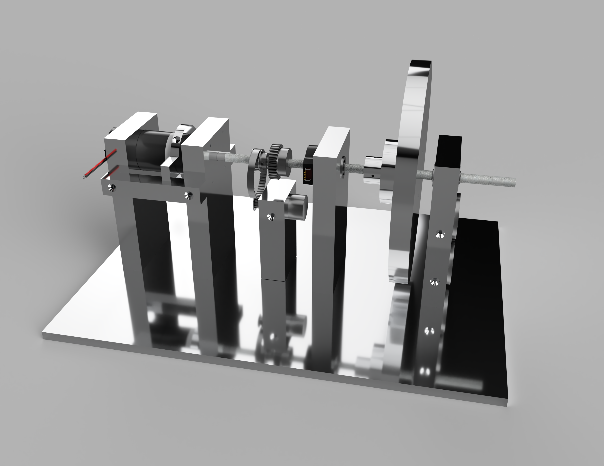

 This project was a lab learning tool for teaching concepts found in a modern controls class. We wanted to design a flywheel system that had various inputs via sensors such as speed (rpm), acceleration, and torque. We then wanted a way to introduce noise, or a perturbation to the system along with a way to decouple the flywheel from the motor.
To read the speed and acceleration, a shaft encoder, a gear/hall effect sensor combo, and a coupled motor acting as a generator were used. These sensors, although slightly redundant, can later be used to study topics such as kalman filtering. Often torque can be found from electrical calculations, but we wanted a mechanical solution. To acheive this, we let the motor freely spin in its housing. Then we mounted a collar to the motor itself. When the motor begins to spin, the collar has an arm that then pushes against a force sensor. This is then converted to a measurement of torque. Electrical calculations can be used as a redundancy measure for torque. To decouple the motor, an electric clutch was placed between the motor output shaft and the main flywheel axle. This can be electronically controlled via a relay. To add noise to the system, the flywheel was designed out of milled aluminum. This allows for eddie currents, or an electrically induced force to be applied to the spinning flywheel using strong neodymium magnets. These magnets are mounted onto stepper motors and can be moved closer or further away from the flywheel. They can completely stop the flywheel, or act as dampening force. A touchscreen Raspberry Pi was added to interface with the device, and the goal was to allow students to make changes to the modeled system via a GUI. I ended my time on this project before this step reached completion.
I contributed heavily to the design and construction of this lab setup while working with Dr. Mark Trudgen at the University of Georgia. After my time at UGA, Dr. Trudgen continued work on this project along with other faculty and students. Further information on the project can be found here: https://peer.asee.org/byoe-a-flywheel-fit-for-the-21st-century

{kind=link}
{kind=link}